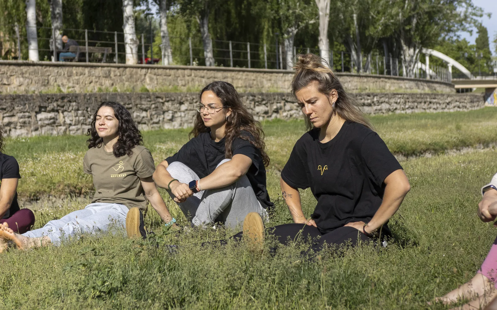
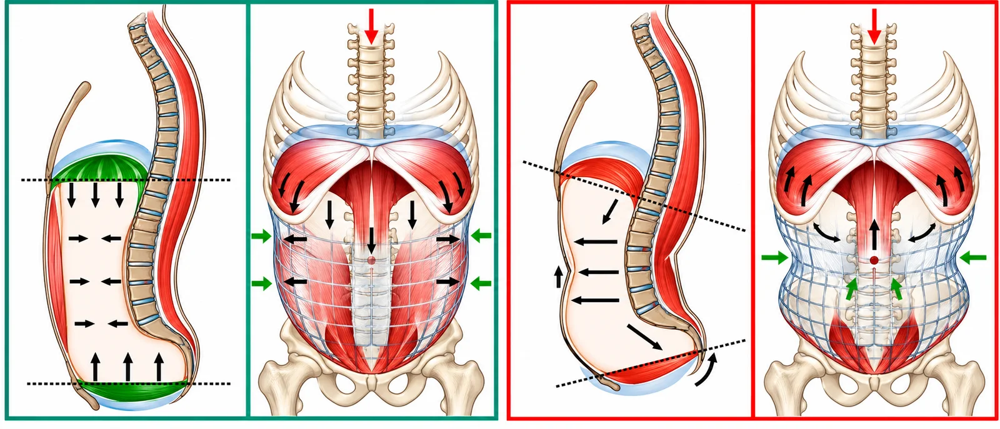
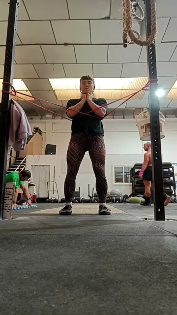
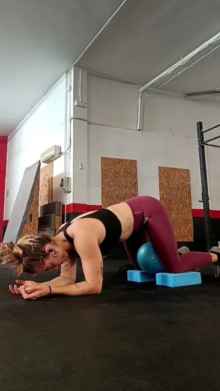
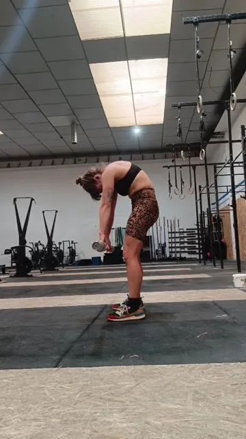
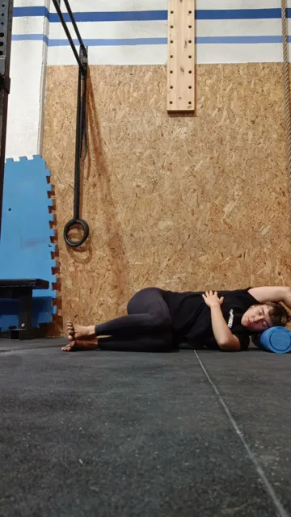
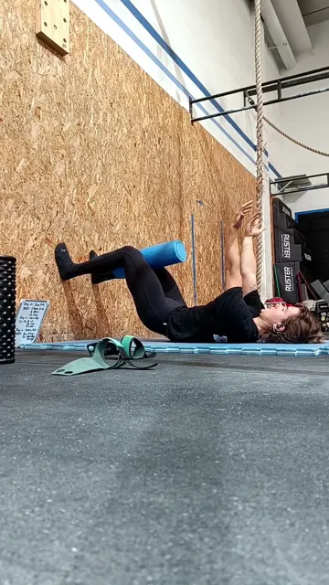

Respiración
Tu respiración y tu suelo pélvico son un mismo sistema. Aprende a respirar mejor para que tu CALP responda mejor.
Descargar la guía en PDF
Tu respiración y tu suelo pélvico son un mismo sistema. Aprende a respirar mejor para que tu CALP responda mejor.
Descargar la guía en PDF
Solemos pensar en el suelo pélvico como algo aislado, pero forma parte de un engranaje mayor: el sistema respiratorio y la gestión de presiones. De hecho, al suelo pélvico también se le llama diafragma pélvico, porque funciona sincronizado con el diafragma torácico. Míralo:
Inhalapor la nariz
👉 Cada respiración está conectada con la función de tu CALP (conjunto abdominal, lumbar y pélvico).
Si esta coordinación se pierde (por rigidez torácica, exceso de tensión en la cadena posterior o mala mecánica respiratoria), se afecta la estabilidad y el rendimiento, y pueden aparecer pérdidas de orina, molestias lumbares o fatiga innecesaria en tus entrenos.
Toca cada una para verla en detalle.
Sigue a la bolita durante unas cuantas respiraciones: cuando crece, inhalas; cuando se encoge, exhalas.
En el box: más control en los WODs, menos fatiga y un CALP más competente.
Una respiración realmente eficiente no se queda en el pecho o en el abdomen: necesita expandirse en tres dimensiones.

Esto requiere buena movilidad en la caja torácica y evitar la tendencia a comprimir la cadena posterior, muy común por la rigidez y el exceso de trabajo extensor. Solo con esta expansión 3D la respiración involucra de verdad al transverso, al diafragma y al suelo pélvico.
Antes de empezar, mide cómo está tu control respiratorio con estos dos tests. Usa el cronómetro: tus resultados se guardan en este dispositivo para que, dentro de 3–4 semanas, hagas el test final y compares.
Opcional, tus sensaciones: apunta si te sientes mareada, con necesidad de suspirar, o si notas que te cuesta estar sin respirar por la boca.
Ve marcando lo que ya has incorporado. Se guarda en este dispositivo.
Objetivo: que tu cuerpo se adapte a respirar por la nariz sin que tengas que pensarlo.
Objetivo: llevar la respiración nasal a momentos más activos.
Expansión torácica 3D
Basado en tu test de exhalación
Toca el vídeo para ver cada ejercicio.

Standing thoracic expansion
Indicaciones clave

Prone hip adduction with pelvic outlet
Indicaciones clave

Indicaciones clave

Seated medball breathing hug
Indicaciones clave

Left side lying for right rib expansion
Indicaciones clave

90/90 hip lift with ball or foam roller
Mira el vídeo para ver la ejecución completa.

Entrenadora especializada en mujer y entrenamiento de fuerza. Mi misión es ayudar a las mujeres a entrenar respetando su biología, rompiendo miedos y adaptando el entrenamiento a su realidad psicosocial.
El deporte está diseñado principalmente por y para hombres, y deja fuera muchas de nuestras necesidades, entre ellas abordar las disfunciones del conjunto abdominal-lumbar y suelo pélvico (CALP).
La información por sí sola no transforma, pero la consciencia y tomar acción sí. Ojalá esta guía te haya hecho mirar tu respiración y tu suelo pélvico con otros ojos… y entender cómo uno influye en el otro.
Si sientes que tu suelo pélvico no responde como debería, que tu respiración no es tu aliada, o nunca habías pensado que esto podía afectarte… puede que no hayas mirado tus disfunciones desde el enfoque correcto.
Si quieres ir a la raíz, individualizar tu entrenamiento y entender tu cuerpo de verdad, escríbeme:
«Estoy lista para integrar el CALP en mi entreno».
Porque no estás sola, y entrenar con seguridad y confianza sí es posible.
Un abrazo, Violeta Gil Pablo